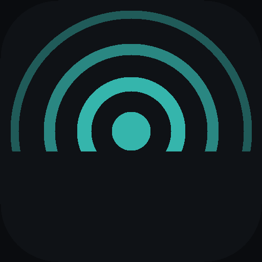
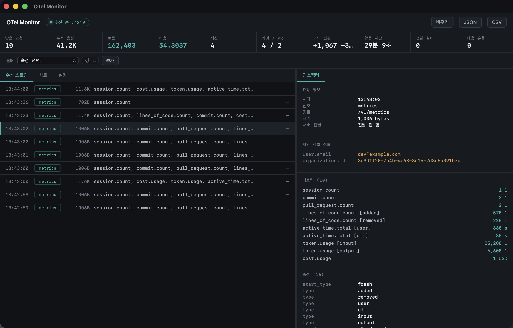

Claude Code 의 텔레메트리를 눈으로 확인합니다.
macOS 13+ · Universal (Intel & Apple Silicon) · 무료 · 오픈소스

Claude Code 의 OpenTelemetry 를 켜면 사용량 메트릭이 주기적으로 나갑니다. 그런데 전송 내역이 로컬에 남지 않아, 무엇이 얼마나 나가는지 알 방법이 없습니다.
전송 성공·실패가 로컬에 남지 않습니다.
실패는 claude --debug 를 켜야 보여서 평소엔 모르고 지나갑니다.
설정을 바꿔도 뭐가 달라졌는지 확인할 수 없습니다.
로컬에서 OTLP 를 받아 풀어본 뒤, 수집 서버로 받은 바이트를 그대로 넘깁니다. 기존 수집은 그대로 두고 내용만 봅니다.
프롬프트나 응답 원문, 도구 파라미터가 섞여 들어오면 알려줍니다. 로그 신호가 켜진 것도 같이 표시합니다.
요청 하나하나를 시각·크기·메트릭명과 함께 보여줍니다. 고르면 전체 속성이 펼쳐집니다.
user.email·organization.id 같은 식별 속성은
색을 달리해 눈에 띄게 합니다.
토큰·비용·활동 시간·코드 변경을 시계열로 그립니다. 그래프에 마우스를 올리면 그 지점 값이 한 번에 보입니다.
user.email·unit·model 등 원하는 속성으로
스트림·통계·차트를 한 번에 걸러냅니다.
날짜·계정별 합계를 남겨 7·30·90일 추이를 봅니다. 요청 원문은 저장하지 않습니다.
새 버전이 나오면 알려줍니다. 확인을 눌러야 받습니다.
창을 닫아도 메뉴바에 남아 계속 받습니다. 아이콘을 우클릭하면 그 시점 수치가 뜹니다.
tail -f 처럼 새 항목을 따라갑니다.
특정 항목을 클릭하면 멈추고, 다시 누르면 따라갑니다.
settings.json 을 읽어 내용 노출 키 6종이 켜져 있는지 확인합니다.
수집한 캡처를 JSON·CSV 로 저장합니다. 데이터는 이 기기를 벗어나지 않습니다.
Applications 로 옮깁니다. 공증돼 있어 경고 없이 열립니다.env 에 아래를 넣습니다. 경로는 CLAUDE_CONFIG_DIR 에 따라 다르며, 기본은 ~/.claude/settings.json 입니다."CLAUDE_CODE_ENABLE_TELEMETRY": "1", "OTEL_METRICS_EXPORTER": "otlp", "OTEL_EXPORTER_OTLP_PROTOCOL": "http/protobuf", "OTEL_EXPORTER_OTLP_ENDPOINT": "http://localhost:4319"
claude 를 실행합니다. 최대 1분 뒤 첫 전송이 도착합니다.Claude Code 가 내보내는 메트릭은 이 8종이 전부입니다.
| 메트릭 | 의미 |
|---|---|
| session.count | 세션 시작 횟수 |
| token.usage | 토큰 (input / output / cacheRead / cacheCreation) |
| cost.usage | 비용 (USD) |
| lines_of_code.count | 수정한 줄 수 (added / removed) |
| commit.count | 커밋 개수 |
| pull_request.count | PR 개수 |
| code_edit_tool.decision | 편집 권한 승인 · 거절 |
| active_time.total | 실제 활동 시간 (초) |
user.email·organization.id 가 같이 붙습니다.
인스펙터에서 따로 표시됩니다.